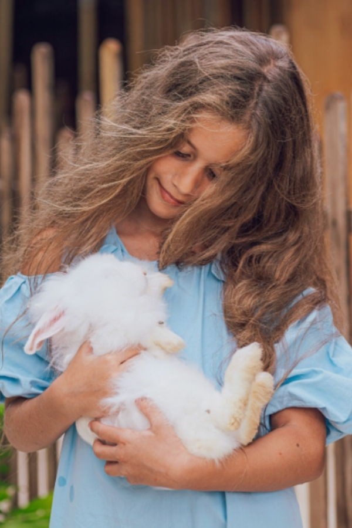
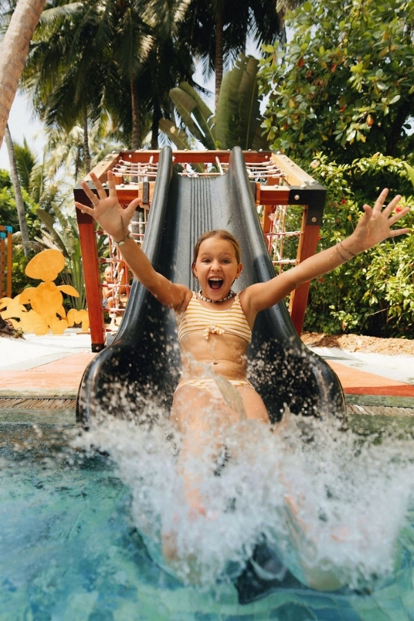

The right kids club can give children a holiday filled with discovery, confidence and new friendships, while giving parents the freedom to enjoy a quiet lunch, an unhurried spa treatment or simply a few hours together. The wrong one may look impressive online yet offer little more than supervised screen time and a predictable craft table.
Brochures rarely reveal the difference. After arranging family journeys across Sri Lanka and the Maldives, we have learned that the quality of a kids club is not measured by its size, colourful interiors or longest activity list. It is found in the people, the philosophy and the attention given to each child.
Is It Designed for Children, or for the Brochure?
The best resorts recognise children as guests in their own right. They understand that a curious four year old, an adventurous nine year old and an independent teenager need entirely different experiences. Their programmes are created to engage children, not simply occupy them until their parents return.
Ask the resort what it wants children to gain from the club. Does the programme encourage creativity, confidence and connection with the destination? Are the team members trained to work with particular age groups? Do they speak warmly and knowledgeably about the children in their care?
A genuinely good kids club is not somewhere children are persuaded to stay. It is somewhere they ask to return to.
Six Details That Matter

The right experience gives children stories to tell — and parents time to breathe
1. Attentive Supervision
Rather than relying on vague assurances of "appropriate supervision," ask how the club adjusts staffing according to the number and ages of children attending. Younger children naturally require closer attention, while activities involving swimming, snorkelling or outdoor exploration may need additional supervision. Ask whether staff hold relevant childcare, first aid and water safety training, and how the resort manages allergies, medical needs and collection procedures. A thoughtful resort will answer clearly and confidently.
2. Programmes for Different Ages
A single timetable cannot meaningfully serve toddlers, older children and teenagers. Young children may enjoy sensory activities, storytelling, treasure hunts and simple cooking. Older children often want greater independence and more challenging experiences, such as snorkelling lessons, wildlife walks, photography or local crafts. Teenagers are particularly easy to overlook. They may have little interest in a conventional kids club, but respond enthusiastically to experiences that feel authentic: surfing, marine conservation, guided cycling, junior cooking sessions or creative workshops. Ask to see the current programme, not only a general list of activities offered throughout the year.
3. A Genuine Connection to the Destination
The most memorable kids clubs could not be lifted from one resort and placed anywhere else. In Sri Lanka, children might learn to prepare string hoppers, recognise bird calls, discover the stories behind traditional masks or explore how village reservoirs have sustained communities for generations. In the Maldives, the ocean becomes the classroom. Children can learn to identify reef fish, understand coral ecosystems, practise water confidence or join an age appropriate conservation activity. These are the experiences children remember when they return home, not because they were extravagant, but because they were new, real and connected to where they had travelled. Ask one simple question: "What can my child experience here that they could not experience anywhere else?"
4. A Space That Feels Cared For
A striking marketing photograph tells you very little about how a kids club operates each day. Request recent images, a short video tour or an online walkthrough. Look for natural light, shaded outdoor areas, clean and carefully maintained equipment and separate spaces for quiet play and energetic activities. The environment should feel created for children, not like a meeting room temporarily filled with toys. For younger children, also ask about secure access, bathroom arrangements, nap spaces and whether parents receive updates during longer sessions.
5. Flexibility for the Whole Family
A family holiday should not require families to spend every hour together. Nor should it constantly separate them. The best resorts create a natural balance. Children can join a morning activity, return for lunch with their parents and perhaps take part in a shared experience later in the day. Look for family cooking classes, nature walks, private boat excursions or creative workshops that parents and children can enjoy together. Flexible participation is especially valuable when a child is shy, tired or simply wants a parent nearby. The programme should adapt to the family, not force the family to adapt to it.
6. Thoughtful Evening Options
Evenings are often when parents most appreciate support. Ask whether the resort offers supervised evening sessions, children's dining, in villa childcare or family friendly restaurants with earlier meal times. Confirm the operating hours, minimum ages, booking requirements and any additional charges before arrival. The best arrangements allow parents to enjoy time together while children have an evening that feels special in its own right.
Sri Lanka or the Maldives?
Both destinations welcome families beautifully, but their strengths are different.
Sri Lanka: One Island, Many Adventures
Sri Lanka is particularly rewarding for families who want variety. A single journey can include ancient cities, tea estates, wildlife, beaches and immersive cultural experiences. The finest family properties extend the experience beyond the kids club through junior ranger programmes, cooking sessions, guided nature walks and sensitively arranged community encounters. Children are not merely entertained. They begin to understand the country around them.


The Maldives — where the ocean itself becomes the curriculum
The Maldives: Where the Ocean Becomes the Classroom
In the Maldives, the natural environment is the main attraction. The strongest programmes build children's confidence around the sea through guided snorkelling, marine life identification, coral education and beach conservation. For older children, selected resorts may offer introductory diving or water sports programmes, subject to age and safety requirements. A child who arrives uncertain about the ocean may leave able to identify reef fish and explain why coral needs protection. That is far more meaningful than another afternoon indoors.
The Question That Matters Most
Facilities can be compared. Timetables can be downloaded. Activities can be counted. But the most important question is simpler: Will my child feel understood here?
At Exemplary Voyages, we consider children's ages, personalities and interests alongside the needs of their parents. We look beyond the photographs to examine the programme, supervision, setting and overall family experience. Because the right resort does more than keep children busy. It gives them stories of their own, while giving their parents the rare luxury of knowing they are happy, engaged and genuinely cared for.